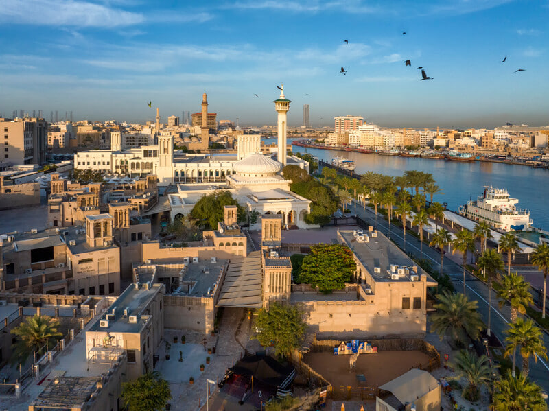
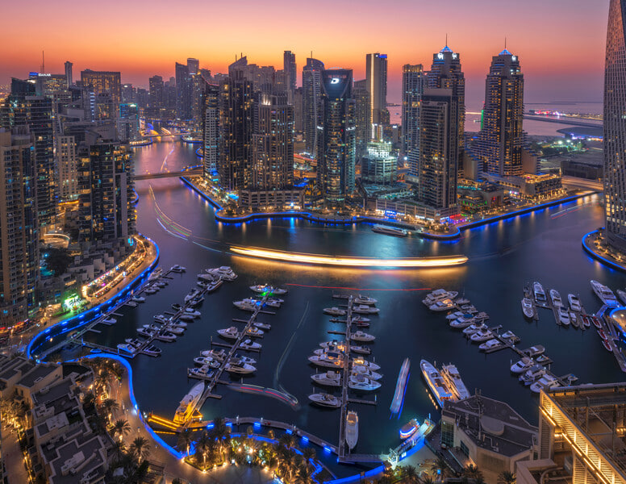

Umri davomida hech bo‘lmaganda bir marta bo‘lsa-da, Dubayga sayohat qilishni orzu qilmagan inson topilmasa kerak. Osmono‘par binolar, rivojlangan shahar, issiq quyosh tafti va jozibali dengiz sohillarini bir so‘z bilan ta’riflash qiyin. Uni faqat ko‘rish va zavqlanish kerak xolos. “Daryo.uz” jurnalisti Nargiza Murodova Dubay bo‘ylab o‘tkazilgan press-turda ishtirok etib, shaharning turizm salohiyati bilan tanishdi.
Shubhasiz, sayohatdan olgan taassurotlarim olam jahon. Keling, kaminani hayratlantirgan Dubay taassurotlarini siz bilan bo‘lishaman.
